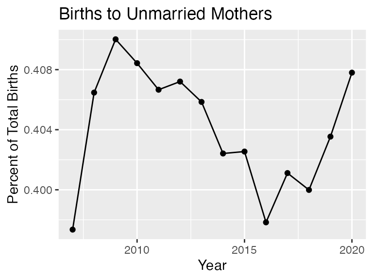

Overview
This package makes it easier to use the CDC Wonder API. It does so by employing hidden default query lists and lookup tables, allowing users to focus only on the variables they’re interested in obtaining, and to write queries using human readable names rather than numeric codes.
- converts the user’s parameter requests to codes
- adds these codes to the default query list
- calls the WONDER API to obtain query results
- processes the results
- returns a tidy data frame
Limitations of the CDC WONDER API
Note that queries for mortality and births statistics from the National Vital Statistics System cannot limit or group results by any location field, such as Region, Division, State or County, or Urbanization (urbanization categories map to specific geographic counties). See: https://wonder.cdc.gov/wonder/help/WONDER-API.html for more information.
Example
| Year | Gender | Deaths | Population | Crude Rate |
|---|---|---|---|---|
| 1999 | Female | 1215860 | 142237295 | 854.8 |
| 1999 | Male | 1175183 | 136802873 | 859.0 |
| 2000 | Female | 1225706 | 143368343 | 854.9 |
| 2000 | Male | 1177289 | 138053563 | 852.8 |
| 2001 | Female | 1232913 | 145077463 | 849.8 |
| 2001 | Male | 1183090 | 139891492 | 845.7 |
show_databases() displays available databases by name and code:
wonderapi::show_databases()## # A tibble: 7 × 2
## label name
## <chr> <chr>
## 1 Natality for 1995 - 2002 D10
## 2 Natality for 2003 - 2006 D27
## 3 Natality for 2007 - 2020 D66
## 4 Natality for 2016 - 2020 (expanded) D149
## 5 Detailed Mortality D76
## 6 Provisional Multiple Cause of Death D176
## 7 Heat Wave Days D104More databases will be added in the future.
The best way to become familiar with CDC Wonder API options is to use the web interface: https://wonder.cdc.gov, as the options available through the API are nearly identical. The greatest difference is that location variables are not available through the API.
Installation
This package is not on CRAN. It can be installed from Github with the devtools package:
devtools::install_github("socdataR/wonderapi", build_vignettes = TRUE)(The vignettes are an important component of the package as the codebooks are stored as vignettes, so be sure to include build_vignettes = TRUE.)
Getting started
Queries are composed of parameter name-value pairs. Setting up a query without assistance is complex because the query must be submitted as an .xml file with a long list of required parameters, such as here (Example 1) and here (Example 2). The point of the package is to prevent your having to create requests in this form. The code for converting R lists to xml and making the actual query is borrowed from the wondr package. The value of this package is in the “pre” and “post” stages of the query, that is, the processes of setting up the query and tidying the results.
Codebooks
Codebooks are provided as package vignettes to allow the user to conveniently look up the names and values of available parameters in each dataset. They may be accessed quickly by typing:
> ??codebookin the console, or searching for “codebook” in the Help window. The codebooks are an important contribution of the package and are not provided by the CDC. They are generated automatically by this script, which scrapes the CDC Wonder web interface form, and displays parameter names and values in human readable form. The benefit of this method is the ability to quickly produce and update codebook vignettes that closely follow the web interface, with parameters appearing in the same order. It also means, however, that the codebooks contain more information than the typical user needs to submit a query. Most users will only need Group By variables (codes beginning with “B_”), Measures (codes beginning with “M_”), and Limiting Variables (codes beginning with “V_”).
Although some of the parameter names are long and/or awkward, for the sake of consistency, we follow the CDC names exactly. The only exception is that any content that appears in parentheses should be dropped. For example, “Fertility Rate” can be substituted for “M_5”, but “Fertility Rate (Census Region, Census Division, HHS Region, State, County, Year, Age of Mother, Race) cannot.
Default query lists and requests
To facilitate the process of designing a query list, this package relies on default query lists. Each default query is set to request a single Group By Results parameter, generally set to "Year". It is set to request the Measures that are listed as default Measures on the web interface (i.e. Births for the Births dataset; Deaths, Population and Crude Rate for the Detailed Mortality dataset.) To see the default settings, perform a query request without specifying a querylist:
| Year | Births |
|---|---|
| 2007 | 4316233 |
| 2008 | 4247694 |
| 2009 | 4130665 |
| 2010 | 3999386 |
| 2011 | 3953590 |
| 2012 | 3952841 |
| Year | Deaths | Population | Crude Rate |
|---|---|---|---|
| 1999 | 2391043 | 279040168 | 856.9 |
| 2000 | 2402995 | 281421906 | 853.9 |
| 2001 | 2416003 | 284968955 | 847.8 |
| 2002 | 2443030 | 287625193 | 849.4 |
| 2003 | 2447946 | 290107933 | 843.8 |
| 2004 | 2397269 | 292805298 | 818.7 |
The default lists were prepared based on CDC examples, but we make no claim that they are error free. If you have any suggestions for improving them, please make a pull request on Github or send an email to Joyce Robbins. The default lists are available here.
Creating customized queries
There are different types of parameters. Most critical are Group Results By and Measures. The Group Results By parameters serve as keys for grouping the data; the maximum number of Group Results By parameters is five. Limiting Variables may also be used to constrain results behind the scenes.
To make changes to the default list, first create a list of lists, wherein each nested list is a name-value pair. For example, the following changes the first (and currently only) “Group Results By” variable to Weekday:
| Weekday | Deaths | Population | Crude Rate |
|---|---|---|---|
| Sunday | 8049406 | Not Applicable | Not Applicable |
| Monday | 8120828 | Not Applicable | Not Applicable |
| Tuesday | 8066322 | Not Applicable | Not Applicable |
| Wednesday | 8074854 | Not Applicable | Not Applicable |
| Thursday | 8087969 | Not Applicable | Not Applicable |
| Friday | 8197715 | Not Applicable | Not Applicable |
As the set up is slightly different depending on the parameter type, more details on setting up the name-value pairs by parameter types are provided below.
Group By variables
Each dataset allows for fixed number (5 or fewer) Group By variables, codes for which are "B_1", "B_2", "B_3", etc. "Group By Results" may be substituted for "B_1" and "And By" for "B_2". "And By” may not, however, be substituted for "B_3" on to avoid ambiguity (this may change in the future.) Values – in this case, the Group By variables – may be specified by code or human readable name. The following, thus, are equivalent:
## not run
mylist <- list(list("B_1", "D66.V2"))
mylist <- list(list("Group Results By", "Race"))
mylist <- list(list("B_1", "Race"))
mylist <- list(list("Group Results By", "D66.V2"))See the appropriate codebook for all Group By options.
Measures
Measures do not need values; it is sufficient to specify a name only:
mylist <- list(list("Group Results By", "Marital Status"),
list("And By", "Year"),
list("Average Age of Mother", ""))
mydata2 <- getData("Natality for 2007 - 2020", mylist)| Marital Status | Year | Births | Average Age of Mother |
|---|---|---|---|
| Married | 2007 | 2601186 | 29.52 |
| Married | 2008 | 2521128 | 29.60 |
| Married | 2009 | 2437007 | 29.70 |
| Married | 2010 | 2365915 | 29.84 |
| Married | 2011 | 2345817 | 29.94 |
| Married | 2012 | 2343222 | 30.03 |
Limiting variables
Queries can be constrained with parameters that limit results in the background. For example, if you’re only interested in February births, you may choose to limit results to February as follows, rather than grouping by Month:
## # A tibble: 14 × 2
## Year Births
## <dbl> <dbl>
## 1 2007 326891
## 2 2008 338521
## 3 2009 316641
## 4 2010 301994
## 5 2011 297961
## 6 2012 304505
## 7 2013 291748
## 8 2014 298404
## 9 2015 298058
## 10 2016 306015
## 11 2017 289054
## 12 2018 284250
## 13 2019 279963
## 14 2020 282654Note that values for Limiting Variables must be entered as codes; in this case “2” rather than “February.” We hope to add capability for human readable values in the future.
Plotting query results
By returning a tidy data frame, the query results are ready to be plotted without any additional data manipulation:
ggplot(mydata2, aes(x = Year, y = Births, color = `Marital Status`)) +
geom_line() + ggtitle("Births by Marital Status")
ggplot(mydata2, aes(x = Year, y = `Average Age of Mother`,
color = `Marital Status`)) + geom_line() +
geom_point() + ylab("age (in years)") +
ggtitle("Average Age of Mother")
mydata2 <- mydata2 %>%
select(-`Average Age of Mother`) %>%
spread(key = `Marital Status`, value = `Births`) %>%
mutate(Total = Married + Unmarried)
ggplot(mydata2, aes(x = Year, y = Unmarried / Total)) + geom_line() +
geom_point() + ggtitle("Births to Unmarried Mothers") +
ylab("Percent of Total Births")
Combining results from multiple datasets
Some of the datasets, such as the Births, are divided into multiple databases by time period. wonderapi makes it easy to combine the data into one data frame. (Care needs to be taken as the variables are not identical in all. For example, the 1995 - 2002 dataset does not have any measure options; it only returns number of births. To find out what’s available, see the codebooks (>??codebook) and crosscheck with the CDC Wonder API web interface.)
births <- rbind(getData("Natality for 1995 - 2002"),
getData("Natality for 2003 - 2006"),
getData("Natality for 2007 - 2020"))
ggplot(births, aes(Year, Births)) + geom_line() +
ggtitle("U.S. Births by Year, 1995 - 2020")
Errors
The main source of errors is improper query requests. The wonderapi has limited ability to catch problems before the query request is made. It checks the list of parameter names and will reject the name-value pair if the name, either in code or human readable form, is not recognized. (Checking for value problems will be added in the future.) Here is an example of an unrecognized parameter name:
## Ignoring: "Suspect",...(not recognized)| Year | Deaths | Population | Crude Rate |
|---|---|---|---|
| 1999 | 2391043 | 279040168 | 856.9 |
| 2000 | 2402995 | 281421906 | 853.9 |
| 2001 | 2416003 | 284968955 | 847.8 |
| 2002 | 2443030 | 287625193 | 849.4 |
| 2003 | 2447946 | 290107933 | 843.8 |
| 2004 | 2397269 | 292805298 | 818.7 |
Errors due to the constraints of the CDC Wonder API are more difficult to catch since there are many quirky rules and it is currently beyond the scope of this package to check for them. The following, for example, appears to be a reasonable request, but results in an error:
mylist <- list(list("And By", "Education"),
list("Birth Rate", ""))
mydata4 <- getData("Natality for 2007 - 2020", mylist)## No encoding supplied: defaulting to UTF-8.## Message from query:
## Any by-variables picked from {0} need to appear in the order listed, and other by-variables can't come between them.## Error in getData("Natality for 2007 - 2020", mylist): Internal Server Error (HTTP 500).In this case, the best approach is to visit the CDC Wonder API web interface and try the same query. If all goes well, you will receive more detailed information on what went wrong:

We learn that we can’t include “Education” if we request the “Birth Rate” measure. If we try again with “Bridged Race” instead of “Education”, it works:
mylist <- list(list("And By", "Mother's Bridged Race"),
list("Birth Rate", ""))
mydata5 <- getData("Natality for 2007 - 2020", mylist)| Year | Mother’s Bridged Race | Births | Total Population | Birth Rate |
|---|---|---|---|---|
| 2007 | American Indian or Alaska Native | 49443 | 3,829,898 | 12.91 |
| 2007 | Asian or Pacific Islander | 254488 | 15,559,373 | 16.36 |
| 2007 | Black or African American | 675676 | 40,451,108 | 16.70 |
| 2007 | White | 3336626 | 241,390,828 | 13.82 |
| 2008 | American Indian or Alaska Native | 49537 | 3,983,929 | 12.43 |
| 2008 | Asian or Pacific Islander | 253185 | 16,094,699 | 15.73 |